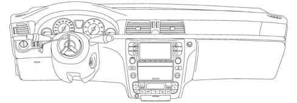

FACIA
- Path
- Descriptions > 70 FITTINGS > 7040 BODYSHELL INTERIOR TRIMS AND FITTINGS > FACIA
- Kind
- system description
- Applies to
- all engines; all production periods
- Interactive page
- https://sloeber94.github.io/elrnDB-lThss/en/#/841005827
Applies to: all engines; all production periods
SPECIFICATIONS
All the vehicle interior trims, designed to satisfy the most stringent international standards governing flammability, are slow burning, do not ignite through accidental contact (for example if a cigarette is dropped), do not develop flames and, in the presence of severe overheating, are subject to combustion that produces strong, dense smoke.
The one-piece dashboard is secured to a high-resistance steel crossmember, in turn secured to the bodyshell.
The design of the dashboard and the surrounding trims is aimed at producing a high level of comfort and a high degree of passive safety, achieved by eliminating all projections which could be dangerous to the occupants of the vehicle in the case of an impact.
The passenger Air Bag module is housed under the dashboard trim, protected by a "programmed" breakage cover.
COMPOSITION
